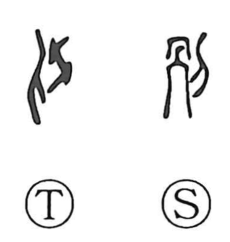

別

Uncategorized
Kun: wakeru, wakatsu, wakareru | On: betsu
to separate ・ to divide ・ distinction ・ other
Explanation
別 is a compound graph that joins the element called ka—an ancient depiction of the human skeleton from the chest upward—with the knife radical. The character pictures cutting the sinews where they bind the bones, a vivid act of severing what had been connected. From this image arise its senses of separating, dividing or apportioning, and parting, and by extension the notion of distinction and otherness.